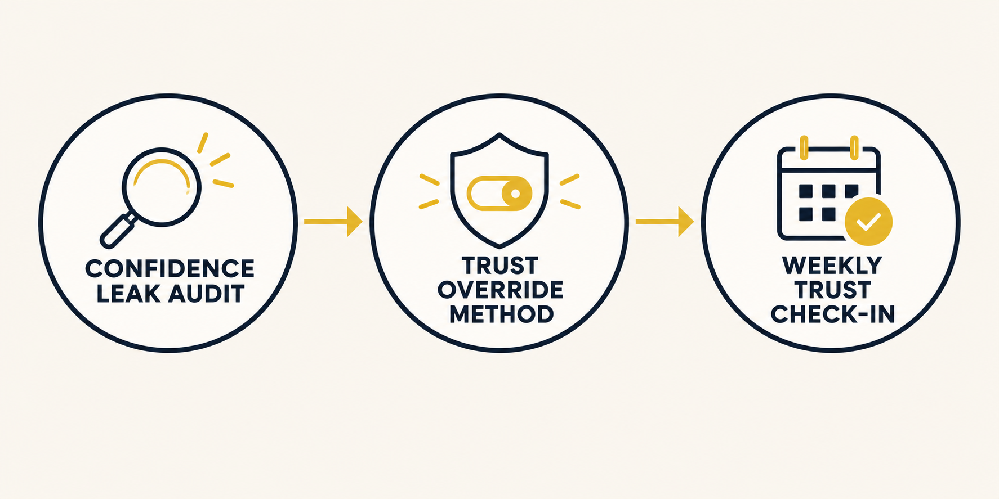
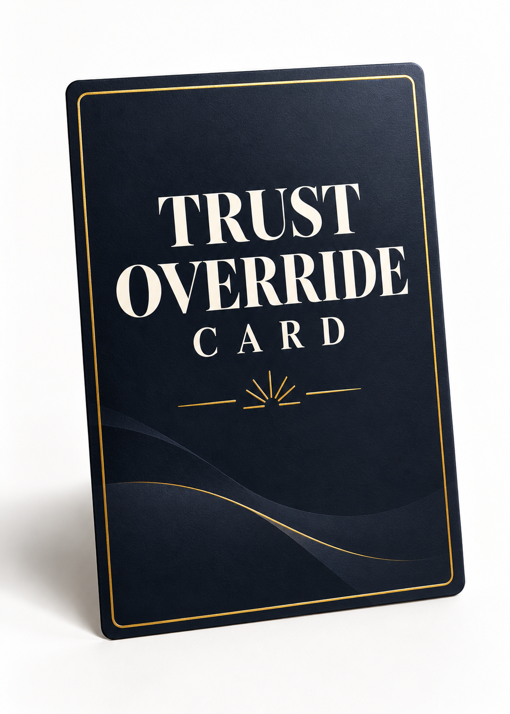

You walk in prepared — you know the material, you have a read on the room. Then someone pushes back, the moment gets heavier than expected, and something in you quietly steps back. You downplay your own opinion. You concede a point you didn't actually agree with. You feel a beat behind, even though a minute ago you weren't. It's not that you don't have good judgment. It's that somewhere between having the thought and saying it out loud, an internal audit fires — and it doesn't ask whether you're right. It just asks whether you're sure enough to risk being wrong in front of someone.
You've tried to fix this the way everyone tells you to. Confidence tips that name the problem and stop there. Positive-thinking exercises and affirmations you say to yourself beforehand — in the car, in the mirror, in the five minutes before the meeting — that work fine in that quiet, controlled moment and then evaporate the second the real conversation gets hard. Maybe you've even started a course on this exact topic. And the fact that you're still looking for an answer says something: it wasn't that you didn't try. It's that everything you tried was built to be practiced somewhere safe, and the moment that actually needed it never was.
Here's the part that gets missed: the problem was never a lack of confidence in general. It's specific. It shows up in certain rooms, at certain moments — the second something is on the line. A daily mindset habit can't reach that moment, because that moment doesn't wait for you to be in the right headspace. What actually works has to run inside the moment itself, not before it.
That's what The Trust Override Method is. It's not an affirmation you say ahead of time and hope holds. It's a short, real-time sequence you run right as the internal audit fires — in the meeting, mid-conversation, the second before you'd normally back down — that gets you back to trusting the read you already had, in under a minute, with nothing to memorize and no particular mood required first.
Picture the moment it's actually for: someone across the table just pushed back on something you know is right, and you feel the familiar pull to soften it, hedge it, or let it go. That's the exact second the sequence runs — not five minutes later when you've thought of the perfect comeback, but right there, while the moment is still open.

The Trust Override Method guide walks you through the full sequence and exactly when to use it. Alongside it, you get the Trust Override Card — a one-page reference built to be the thing you actually reach for in the moment, not something you have to recall from memory.
The guide moves in three parts. First, the Confidence Leak Audit, which pinpoints your specific rooms and moments — the ones where the internal audit fires hardest. Before it, you know the feeling but couldn't say exactly when or where it hits hardest. After it, you have a short, specific list — the rooms, the people, the kinds of moments — so the method that follows has an exact target instead of a vague one. Then the Trust Override Method itself, the real-time sequence. Then the Weekly Trust Check-In, a short weekly habit that keeps the method sharp without turning it into one more thing you have to maintain daily.

I used to think I was just a slow thinker. Early in my career running operations for a regional solar company, I'd walk into a negotiation with every number memorized — and the second someone pushed back, my read on the room would evaporate. It wasn't a lack of preparation. It was an internal audit that fired at exactly the wrong moment: a hot flush of hesitation, my eyes dropping to my notes, conceding a point I knew I shouldn't have.
I tried what everyone tells you to try. Journals. Affirmations recited in the car before a pitch. It worked fine in the parking lot. The moment a client asked something I hadn't scripted, it was gone — because the practice always lived somewhere safe and controlled, and the real moment never did.
The shift happened on a Friday afternoon, across the table from a vendor pushing an inflated price increase. I felt the old freeze start. Instead of trying to feel confident, I did something physical: put the pen down, both feet flat on the floor, named the pressure in the room before responding. Trusted the read I already had. Said no. Waited. He folded.
Confidence wasn't a feeling to conjure before walking in. It was a mechanical override I could run inside the moment itself. That's the whole method — not loving yourself more, but having a trigger that fires when the room gets hot and your brain wants to second-guess you.
If any of that sounds familiar, this is the sequence that came out of it — and it's yours starting today.
Here's what's included when you get The Trust Override Method today:
The Trust Override Method guide + the Trust Override Card — $27 value.
Plus, as a bonus: The High-Pressure Override Playbook — $17 value. The core method works everywhere, but some rooms hit harder — the performance review where your standing feels on the line, the negotiation where backing down costs something real, the moment someone with authority over you pushes back and everyone's watching how you respond. This bonus is the version of the method built for exactly those rooms, where second-guessing yourself is the most expensive.
Try the Trust Override Method for 30 days. If you use it and it doesn't help you trust your own read in the moments that matter, email me at support@dereset.com within 30 days and I'll refund every cent. No hoops.
That's exactly why this is built differently. An affirmation is something you say before the moment, hoping it carries over. The Trust Override Method is something you run during the moment — it doesn't depend on the mood you walked in with.
The sequence is designed to run in under a minute and lives on the Trust Override Card, so you're not trying to recall a multi-step framework from memory under pressure. It's built for exactly the moment your brain is least willing to cooperate.
No — this is a behavioral, in-the-moment tool for everyday confidence and decision-making, not a treatment for clinical anxiety, depression, or chronic low self-esteem. If what you're feeling is persistent or severe, it's worth talking to a professional alongside anything you learn here.
You have 30 days and a no-hoops refund. Try it in a real room that matters to you, and if it doesn't hold, you get your money back — no explanation required.
The next time it matters, you don't have to second-guess it — you just need a way to trust it in the moment it counts.
Get The Trust Override Method today, and get the Trust Override Card and The High-Pressure Override Playbook included.
Get The Trust Override Method — $27